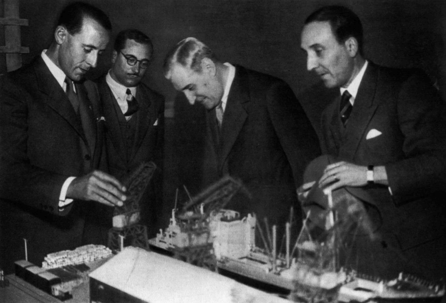
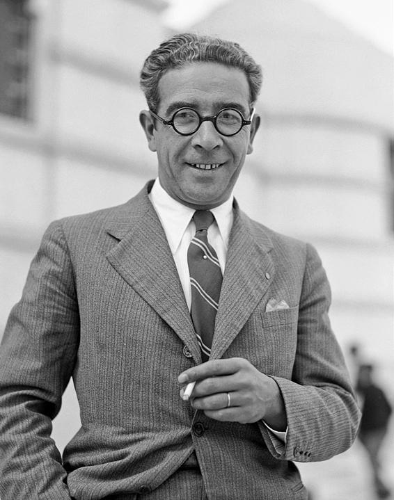
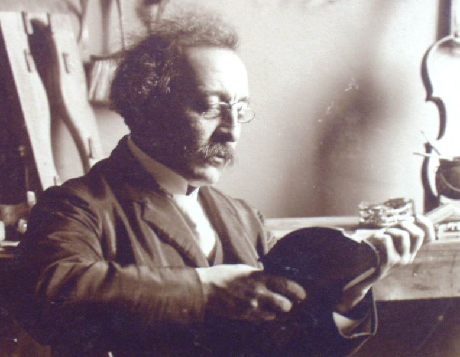
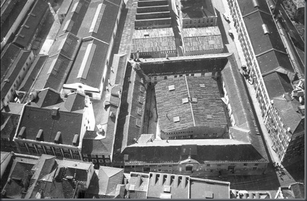

O Técnico como Palco do Estado Novo: Exposição Quinze Anos de Obras Públicas
O Instituto Superior Técnico como palco de exposições e propaganda durante o Estado Novo.
Archive / memory / preservation
This page is dedicated to historical research and archival work. Most of it is dedicated to the history of Instituto Superior Técnico and the Instituto Industrial e Comercial de Lisboa. In other words, the history of higher education in Portugal. All of the articles are written in portuguese, and have been published in Diferencial, the students newspaper of Instituto Superior Técnico.
Articles & archival work
O Instituto Superior Técnico como palco de exposições e propaganda durante o Estado Novo.

A história de Porfírio Pardal Monteiro e do projeto das novas instalações do Instituto Superior Técnico na Alameda.

Os primeiros anos do Instituto Superior Técnico, entre a Primeira República, a guerra e as greves estudantis.

A história de Alfredo Bensaúde, da sua família açoriana e da fundação do Instituto Superior Técnico.

Das origens do Instituto Industrial de Lisboa à criação do Instituto Superior Técnico.

Aqui vem à luz uma das discussões mais insólitas do Ensino Superior em Portugal. O ano era 1960 e o Infante D. Henrique fazia 500 anos da sua morte. Por trás das comemorações, as Universidades de Lisboa e Coimbra discutiam e através dessa discussão conta-se a história do Ensino Superior em Portugal. Incluindo o ano em que o Ensino Superior morreu – 1537.